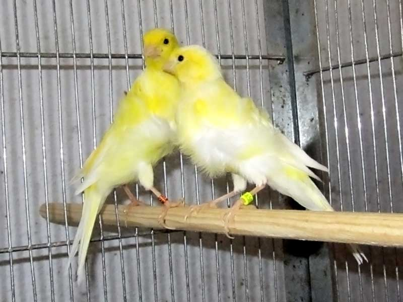
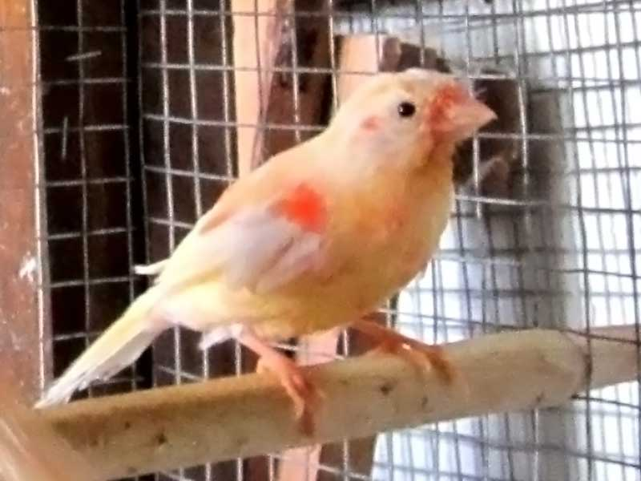

<!DOCTYPE html>
<html>
	<head>
		<meta charset="UTF-8" />
		<title>Канарейки</title>
		<link href="css/styles.css" rel="stylesheet" type="text/css" media="all" />
		<script src="js/jquery-1.7.2.min.js"></script>
		<script src="js/lightbox.js"></script>
		<link href="css/lightbox.css" rel="stylesheet" />
	</head>
</html>

<body>

	<div id='external_box'>

		<div id='internal_box'>
			<div id='header'>
				<ul id="menu">
					<li class="navigation"><a href='index.html' >Главная</a></li>
					<li class="navigation"><a href='about.html' class='chosen_li'>О нас</a></li>
					<li class="navigation"><a href='photogallery.html'>Галерея</a></li>
					<li class="navigation"><a href='contacts.html'>Контакты</a></li>
				</ul>
			</div>
			<div class='clear'>
			</div>
			<div id='content'>
				<div class="block">
				
				<p>Как приятно проснуться утром под щебетание птиц. И для этого совсем необязательно ехать в лес и ночевать в палатке. Можно просто завести весёлого пернатого питомца, например канарейку. Расцветка и пение этих замечательных птичек способны удовлетворить самый взыскательный вкус. И кормить их не сложно. Словом, заведите канарейку, и мы уверены - вы не пожалеете об этом!</p>
				</div>
					<div class='clear'>
					</div>
				<div class="block">
				
				<p>Наш сайт посвящён КАНАРЕЙКАМ — одним из самых музыкальных и неприхотливых домашних птиц. Уже не одно столетие канарейки радуют своих владельцев приятным мелодичным пением, разнообразием расцветок и необычностью форм. И неудивительно, что во всем мире канарейки пользуются большой и, несомненно, совершенно заслуженной популярностью, которая постоянно растет.
				</div>
					<div class='clear'>
					</div>
			</div>
		</div>

		<div id="bottom_picture">
		</div>

	</div>
	<div id='foreground'>

	</div>
</body>
